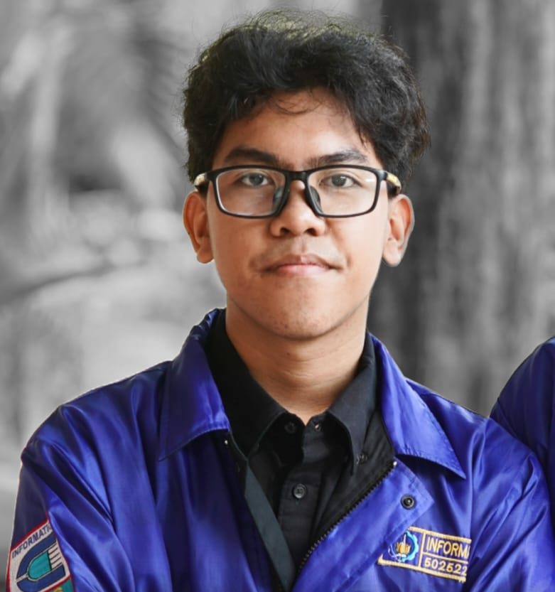

Hi there
I am Nicklaus Natanael S. Gurukinayan, but most of my friends call me Niko. I am a critical thinking person and I always try to find the solution for a problem quickly and effectively. I can adapt easily to new environment and open to new perspective. I was born in a small city in East Borneo called Sangatta, but currently I am an informatics engineering student on Sepuluh Nopember Institute of Technology.